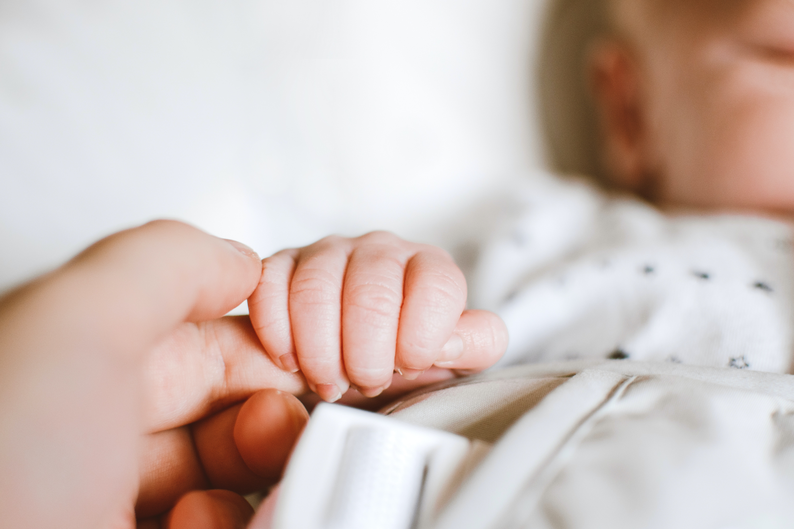

helathy lifestyle

Care of the mother and newborn after birth
Some women will give birth in the home with a skilled attendant; others may not have a skilled attendant present. Some women who give birth in the facility will spend time there following childbirth. WHO recommends that a women not be discharged before 24 hours after birth. Regardless of the place of birth, it is important that someone accompanies the woman and newborn for the first 24 hours after birth to respond to any changes in her or her baby's condition.
Many complications can occur in the first 24 hours. Following childbirth at home, it is important that the mother and baby receive a postnatal examination as early as possible, preferably within 24 hours of birth. If the birth was at a facility, mother and baby should receive a postnatal examination before discharge
IMPORTANT ISSUES TO DISCUSS WITH WOMEN AND THEIR FAMILIES, IMMEDIATELY FOLLOWING BIRTH
The importance of having someone nearby for the first 24 hours.
The importance and recommended timing of postnatal visits.
The importance of the new mother eating more and healthier foods – discuss in the context of local practices and taboos to ensure women have access to good nutrition. The new mother should also drink plenty of clean, safe water.